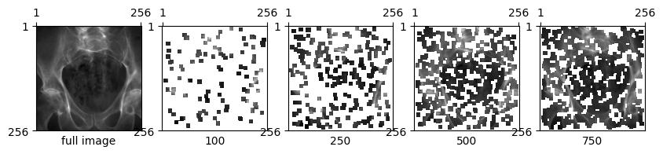

import matplotlib.pyplot as plt
import torch
from diffdrr.drr import DRR
from diffdrr.visualization import plot_drr
from diffpose.deepfluoro import DeepFluoroDataset, Transforms
from diffpose.registration import SparseRegistration, vector_to_imgSparse rendering
Hacking DiffDRR to render sparse subsets of image patches
specimen = DeepFluoroDataset(1)
height = 256
subsample = (1536 - 100) / height
delx = 0.194 * subsample
_, pose = specimen[0]
pose = pose.cuda()
drr = DRR(
specimen.volume,
specimen.spacing,
sdr=specimen.focal_len / 2,
height=height,
delx=delx,
x0=specimen.x0,
y0=specimen.y0,
reverse_x_axis=True,
bone_attenuation_multiplier=2.5,
).to("cuda")
registration = SparseRegistration(drr, pose, parameterization="se3_log_map")# Generate images with different numbers of patches
imgs = []
n_patches = [None, 100, 250, 500, 750]
for n in n_patches:
img, mask = registration(n, patch_size=13)
if n is not None:
img = vector_to_img(img, mask)
imgs.append(img)
# Plot the images with various levels of sparsity
axs = plot_drr(torch.concat(imgs))
for ax, n in zip(axs, n_patches):
if n is None:
n = "full image"
ax.set(xlabel=n)
plt.show()
# Full image with SparseRegistration29.5 ms ± 375 µs per loop (mean ± std. dev. of 100 runs, 10 loops each)# 100 patches8.57 ms ± 51.3 µs per loop (mean ± std. dev. of 100 runs, 10 loops each)# 250 patches15.3 ms ± 112 µs per loop (mean ± std. dev. of 100 runs, 10 loops each)# 500 patches22.1 ms ± 141 µs per loop (mean ± std. dev. of 100 runs, 10 loops each)# 750 patches25.7 ms ± 157 µs per loop (mean ± std. dev. of 100 runs, 10 loops each)# Full image with DiffDRR29.7 ms ± 203 µs per loop (mean ± std. dev. of 100 runs, 10 loops each)from diffdrr.metrics import MultiscaleNormalizedCrossCorrelation2d
from diffpose.registration import VectorizedNormalizedCrossCorrelation2dmncc = MultiscaleNormalizedCrossCorrelation2d(patch_sizes=[None, 13], patch_weights=[0.5, 0.5])
smncc = VectorizedNormalizedCrossCorrelation2d()1.51 ms ± 1.3 µs per loop (mean ± std. dev. of 7 runs, 1,000 loops each)pred_img, mask = registration(n_patches=1000, patch_size=13)3.27 ms ± 8.6 µs per loop (mean ± std. dev. of 7 runs, 100 loops each)img.shapetorch.Size([1, 1, 256, 256])pred_img.shapetorch.Size([1, 14675])1 / 30e-333.3333333333333361/ ((30+1.5) * 1e-3)31.746031746031747